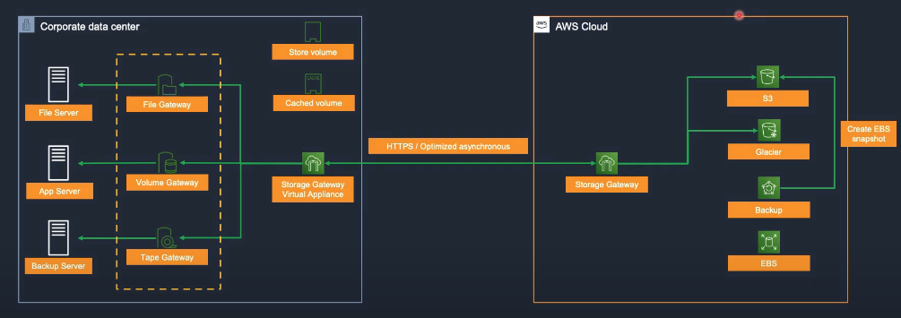

Week 4 Worklog
Date: 2025-09-30
Status: “Done”
Week: “Week 4”
Lecture Notes
Storage Services on AWS
Amazon Simple Storage Service (S3)
Amazon S3 is an object storage service designed to store and retrieve any amount of data from anywhere on the web. It offers virtually unlimited scalability, high availability, strong security, and excellent performance.
Core S3 Features
- Buckets and Objects: Data is stored as objects inside buckets. Each object can be up to 5 TB.
- Availability and Durability: S3 is designed for 99.99% availability and 99.999999999% (11 nines) durability.
- Security: Multiple layers of security including IAM, bucket policies, ACLs, and encryption.
- Scalability: Automatically scales storage and request throughput without performance degradation.
S3 Access Points
Access Points simplify managing data access for shared datasets in S3.
- Per-application access control: Each access point has its own policy.
- Operational simplicity: Eases permission management for shared datasets used by many applications.
- Network controls: Can be configured to accept requests only from specific VPCs.
S3 Storage Classes
Choose among storage classes optimized for different access patterns and cost profiles:
- S3 Standard: For frequently accessed data; highest availability and performance.
- S3 Intelligent-Tiering: Automatically moves objects between tiers to optimize cost.
- S3 Standard-IA (Infrequent Access): Lower cost for infrequently accessed data with millisecond retrieval.
- S3 One Zone-IA: Like Standard-IA but stored in a single AZ.
- S3 Glacier Flexible Retrieval: Low-cost archival with minutes-to-hours retrieval.
- S3 Glacier Deep Archive: Lowest-cost archival with ~12-hour retrieval.
Amazon S3 Static Website Hosting
Host static websites (HTML, CSS, JS, images) directly from S3.
Key Capabilities
- Simple setup: A few steps to enable static website hosting on a bucket.
- Low cost: Pay standard S3 storage and data transfer; no separate web server charges.
- Elastic scaling: Automatically handles traffic spikes.
- CDN integration: Easily front with Amazon CloudFront for global performance.
Cross-Origin Resource Sharing (CORS)
CORS allows web resources (fonts, JavaScript, etc.) on one domain to request resources from another domain.
Configuring CORS on S3
- Define policies: Specify which origins are permitted to access a bucket’s content.
- Control methods: Allow specific HTTP methods (GET, PUT, POST, etc.).
- Security posture: Prevent unauthorized cross-origin access.
Object key naming can significantly affect S3 performance:
- Randomized prefixes: Distribute keys across partitions for higher parallelism.
- Avoid sequential prefixes: Don’t use monotonically increasing prefixes (e.g., timestamps) for high-throughput workloads.
- Parallel access: Structure keys to enable concurrent reads/writes.
S3 Glacier – Long-Term Archival
S3 Glacier classes are optimized for ultra–low-cost long-term storage.
Retrieval Options
- Expedited / Fast: Minutes; highest cost.
- Standard: 3–5 hours; balanced cost.
- Bulk: 5–12 hours; lowest cost for large restores.
Glacier Deep Archive
The lowest-cost class for multi-year retention, with ~12-hour retrieval times.
AWS Snow Family
Purpose-built devices and services to move large datasets into and out of AWS when networks are limited or data volumes are massive.
- AWS Snowcone: Small, rugged device (~8 TB). Suited for edge and remote sites.
- AWS Snowball:
- Snowball Edge Storage Optimized: Up to ~80 TB usable storage.
- Snowball Edge Compute Optimized: Adds powerful compute with ~42 TB storage.
- AWS Snowmobile: Exabyte-scale data transfer (up to 100 PB) in a secure containerized data center.
AWS Storage Gateway
Hybrid cloud storage service that connects on-premises applications with cloud-backed storage.
Gateway Types
File Gateway
- NFS/SMB file shares backed by S3 objects.
- Use cases: user shares, application backups, archives.
Volume Gateway
- iSCSI block storage backed by S3 with EBS snapshots.
- Modes:
- Cached volumes: Primary data in S3; local cache on-prem.
- Stored volumes: Primary data on-prem; async copy to S3.
- Use cases: on-prem block workloads with cloud backup/DR.
Tape Gateway
- Virtual Tape Library (VTL) for existing backup apps (e.g., NetBackup, Veeam).
- Writes appear as tape but land in S3/Glacier.
- Use cases: tape replacement and archival modernization.

Disaster Recovery (DR) on AWS
Disaster Recovery is about restoring IT services after major incidents (outages, disasters, hardware failures, cyberattacks).
- RTO (Recovery Time Objective): How quickly to restore service.
- RPO (Recovery Point Objective): How much data loss (time window) is acceptable.
DR Strategies (ordered by complexity & cost)
Backup & Restore
- Maintain backups only (EBS/RDS snapshots, S3/Glacier).
- Restore to new infrastructure during incidents.
- RTO: hours–days. RPO: depends on backup frequency. Cost: lowest.
Pilot Light
- Minimal core services always running on AWS.
- Scale out to full production during DR.
- RTO: hours. RPO: minutes. Cost: moderate.
Warm Standby
- Full system running at reduced scale on AWS.
- Scale up on failover.
- RTO: minutes–hours. RPO: seconds–minutes. Cost: higher.
Multi-Site (Active/Active or Active/Passive)
- Production running across on-prem and AWS, or multi-Region AWS.
- Traffic can be shifted instantly (Route 53, Global Accelerator).
- RTO/RPO: near zero. Cost: highest.
AWS Backup
Centralized backup service for automating and governing data protection at scale.
Key Capabilities
- Central management: Define and apply backup policies across services.
- Multi-service support: EC2, EBS, RDS, DynamoDB, EFS, Storage Gateway, S3, and more.
- Scheduling & lifecycle: Automate backups and retention.
- Compliance: Support for governance and audit requirements.
Benefits
- Operational simplicity: No custom scripts or disparate tools.
- Time savings: Automated, policy-driven protection.
- Reporting & audit: Visibility into backup status and compliance.
Backup Vault Lock
- Immutability controls to prevent modifications or deletions of protected backups for strict compliance.
Exploration
- Curated learning plans and deep-dive content for storage specialists:
- Storage Learning Plan: Block Storage
- Storage Learning Plan: Object Storage
Hands-On Labs
Lab 13 – AWS Backup
- Create S3 Bucket → 13-02.1
- Deploy Infrastructure → 13-02.2
- Create Backup Plan → 13-03
- Set Up Notifications → 13-04
- Test Restore → 13-05
- Clean Up Resources → 13-06
Lab 14 – AWS VM Import/Export
- VMware Workstation → 14-01
- Export Virtual Machine from On-Premises → 14-02.1
- Upload Virtual Machine to AWS → 14-02.2
- Import Virtual Machine to AWS → 14-02.3
- Deploy Instance from AMI → 14-02.4
- Set Up S3 Bucket ACL → 14-03.1
- Export Virtual Machine from Instance → 14-03.2
- Resource Cleanup on AWS → 14-05
Lab 24 – AWS Storage Gateway (On-Premises Integration)
- Create Storage Gateway → 24-2.1
- Create File Shares → 24-2.2
- Mount File Shares On-Prem → 24-2.3
- Clean Up Resources → 24-3
Lab 25 – Amazon FSx (File Systems)
- Create SSD Multi-AZ File System → 25-2.2
- Create HDD Multi-AZ File System → 25-2.3
- Create New File Shares → 25-3
- Test Performance → 25-4
- Monitor Performance → 25-5
- Enable Data Deduplication → 25-6
- Enable Shadow Copies → 25-7
- Manage User Sessions and Open Files → 25-8
- Enable User Storage Quotas → 25-9
- Scale Throughput Capacity → 25-11
- Scale Storage Capacity → 25-12
- Delete Environment → 25-13
Lab 57 – Amazon S3 & CloudFront
- Create S3 Bucket → 57-2.1
- Load Data → 57-2.2
- Enable Static Website → 57-3
- Configure Public Access Block → 57-4
- Configure Public Objects → 57-5
- Test Website → 57-6
- Block All Public Access → 57-7.1
- Configure CloudFront → 57-7.2
- Test CloudFront → 57-7.3
- Bucket Versioning → 57-8
- Move Objects → 57-9
- Replicate Objects Across Regions → 57-10
- Clean Up Resources → 57-11